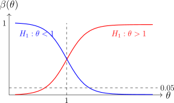

4.2 Uniformly Most Powerful Tests
Tests are often constructed by specifying the size of the test, which determines the probability of the type I error and then minimizing the probability that the null hypothesis is accepted when it is false (type II). Equivalently, we try and maximize the power function of the test for \(\theta \in \Omega - \Omega _0\).
Definition 4.2.1. A test with power function \(\beta (\theta )\) is a uniformly most powerful test of size \(\alpha \), if, for all other tests of the same size \(\alpha \) having power function \(\beta ^*(\theta )\), we have \(\beta (\theta ) \geq \beta ^*(\theta )\) for all \(\theta \in \Omega - \Omega _0\).
Note.
The word uniformly refers to the fact that one function dominates, that is \(\beta (\theta ) \geq \beta ^*(\theta )\) uniformly for all
\(\theta \in \Omega - \Omega _0\) when the alternative \(\Omega - \Omega _0\) consists of a single a point \(\{\theta \}\) (i.e simple alternative) then we drop one
word “Uniformly” and refer to a “most powerful test”.
Theorem 4.2.2 (Neyman–Pearson Lemma). Let \(X\) have probability (density) function \(f_{\theta }(x), \, \theta \in \Omega \).
Consider testing a simple null hypothesis \(H_0:\, \theta = \theta _0\) against a simple alternative
\(H_1:\, \theta = \theta _1\). Suppose the critical region is defined by
\[R = \left \{x:\, \frac {f_{\theta _1}(x)}{f_{\theta _0}}\, > \, C\right \}\]
corresponds to a test of size \(\alpha \), where \(C\) is a constant. Then the test with this critical region is
a most powerful test of size \(\alpha \) for testing
\[H_0:\, \theta = \theta _0\,\, \text {against}\,\, H_1:\, \theta = \theta _1.\]
Proof. Consider another critical region \(R_1\) with the same size. Then \[P_{\theta _0}\left (X\in R\right ) = P_{\theta _0}\left (X\in R_1\right ) = \alpha \]
\[\int _{R}f_{\theta _0}(x)\, dx = \int _{R_1}f_{\theta _0}(x)\, dx\]
\[\int _{R\cap R^C_1}f_{\theta _0}(x)\, dx + \int _{R\cap R_1}f_{\theta _0}(x)\, dx = \int _{R_1\cap R^C}f_{\theta _0}(x)\, dx + \int _{R_1\cap R}f_{\theta _0}(x)\, dx\]
\[\implies \hspace {0.3cm} \int _{R\cap R_1^C}f_{\theta _0}(x)\, dx = \int _{R_1 \cap R^C} f_{\theta _0}(x)\, dx\hspace {0.5cm}\cdots \cdots \hspace {0.3cm}(1)\] for \(x \in R\cap R^C_1\) \[\frac {f_{\theta _1}(x)}{f_{\theta _0}(x)}\, > \, C\]
\[\implies \hspace {0.3cm} f_{\theta _1}(x) \, >\, C\, f_{\theta _0}(x)\]
\[\implies \hspace {0.3cm} \int _{R\cap R_1^C}f_{\theta _1}(x)\, dx \, > \, C\int _{R\cap R^C_1}f_{\theta _0}(x)\, dx\hspace {0.5cm}\cdots \cdots \hspace {0.3cm}(2)\]
for \(\, x\in R_1\cap R^C\) \[\frac {f_{\theta _1}(x)}{f_{\theta _0}(x)}\, \leq \, C\] \[\implies \hspace {0.3cm} f_{\theta _1}(x)\, \leq \, C\, f_{\theta _0}(x)\] \[-f_{\theta _1}(x)\, \geq \, -C \, f_{\theta _0}(x)\]
\[\implies \hspace {0.3cm} - \int _{R_1\cap R^C}f_{\theta _1}(x)\, dx \geq \, -C\, \int _{R_1\cap R^C}f_{\theta _0}(x)\, dx \hspace {0.5cm}\cdots \cdots \hspace {0.3cm} (3)\]
Using (1), (2) and (3) we have \begin {align*} \beta (\theta _1) - \beta _1(\theta _1) & = \int _{R\cap R^C_1} f_{\theta _1}(x)\, dx - \int _{R_1\cap R^C}f_{\theta _1}(x)\, dx\\ & \geq \,C\, \int _{R\cap R_1^C}f_{\theta _0}(x)\, dx - C\int _{R_1\cap R^C}f_{\theta _0}(x)\, dx\\ & = C\left [ \int _{R\cap R_1^C}f_{\theta _0}(x)\, dx - \int _{R_1\cap R^C}f_{\theta _0}(x)\, dx\right ]\\ & = 0 \end {align*}
\[\implies \hspace {0.3cm} \beta (\theta _1) - \beta _1(\theta _1)\geq 0\] Therefore the test with critical region \(R\) is the most powerful. □
Example 4.2.3. Suppose \((X_1, \, \cdots \, , \, X_n)\) are independent \(N(\theta ,1)\) random variables. Consider only the parameter Space \(\Omega = [0,\infty )\). Suppose we want to test \(H_0:\, \theta = 0\,\) against \(\, H_1:\, \theta >0\).
- (a)
- Choose an arbitrary \(\theta _1 > 0\) and obtain the most powerful test of size \(\alpha = 0.05\) of \(H_0:\, \theta = \theta _0\) against \(H_1:\, \theta = \theta _1\).
- (b)
- Does this depend on the value of \(\theta _1\) you choose? Can we conclude that it is uniformly most powerful?
- (c)
- Sketch the power function of the test.
Solution.
- (a).
- \(H_0:\, \theta = \theta _0 = 0\,\) against \(\, H_1:\, \theta = \theta _1\,\) where \(\, \theta _1 > 0\).
By the Neyman-Pearson Lemma the most powerful test of \(H_0:\, \theta = \theta _0\,\) against \(\, H_1:\, \theta = \theta _1\,\) has critical region \[R = \left \{x:\, \frac {f_{\theta _1}(x)}{f_{\theta _0}(x)}\, > \, C\right \}.\] Now \begin {align*} f_{\theta }(x) & = \prod ^n_{i = 1} f_{\theta }(x_i) = \prod ^n_{i = 1}\frac {1}{\sqrt {2\pi }}\,\exp \left \{-\frac {1}{2}(x_i - \theta )^2\right \}\\ & = \left (2\pi \right )^{-n/2}\, \exp \left \{-\frac {1}{2}\sum ^n_{i = 1} (x_i - \theta )^2\right \}\\ & = \left (2\pi \right )^{-n/2}\, \exp \left \{-\frac {1}{2}\sum ^n_{i = 1}(x_i^2 - 2\theta x_i + \theta ^2)\right \} \\ & = \left (2\pi \right )^{-n/2}\, \exp \left \{-\frac {1}{2}\sum ^n_{i = 1} x_i^2 + n\theta \overline {X} - \frac {n\theta ^2}{2}\right \}. \end {align*}
\begin {align*} \frac {f_{\theta _1}(x)}{f_{\theta _0}(x)} & = \frac {\left (2\pi \right )^{-n/2}\, \exp \left \{-\frac {1}{2}\sum ^n_{i = 1}x_i^2 + n\theta _1\overline {x} - \frac {n}{2}\theta _1^2\right \}}{\left (2\pi \right )^{-n/2}\, \exp \left \{-\frac {1}{2}\sum ^n_{i = 1}x_i^2 + n\theta _0\overline {x} - \frac {n}{2}\theta _0^2\right \}}\\\\ & = e^{n\theta _1\overline {x} - \frac {n}{2}\theta _1^2}\, , \hspace {0.3cm} \theta _0 = 0. \end {align*}
\[\implies \hspace {0.5cm} e^{n\theta _1\overline {X} - \frac {n}{2}\theta ^2_1}\, > C\]
\[\implies \hspace {0.5cm} e^{n\theta _1\overline {X}} \, > \, C\, e^{\frac {n}{2}\theta _1^2}\]
\[\implies \hspace {0.5cm} n\theta _1 \overline {X} \, > \, \log \left [C\, e^{\frac {n}{2}\, \theta _1^2}\right ]\]
\[\implies \hspace {0.5cm} \overline {X} \, > \, \frac {1}{n\theta _1}\, \log \left [C\, e^{\frac {n}{2}\theta _1^2}\right ]\hspace {0.3cm}\text {since}\hspace {0.2cm} \theta _1 > 0\] \[\implies \hspace {0.3cm} \overline {X}\, > \, K\] Determine \(K\) for a size of \(\alpha = 0.05\) test \begin {align*} 0.05 & = P_{\theta _0}\left (\overline {X}\, > \, K\right )\\ & = P\left (\frac {\overline {X} - \theta _0}{\frac {1}{\sqrt {n}}}\, > \, \frac {K -\overbrace {\theta _0}^{0}}{\frac {1}{\sqrt {n}}}\right )\\ & = P\left (Z\, > \, K\sqrt {n}\right ) \end {align*}
\[\hspace {0.5cm} K\sqrt {n} = 1.645\, \implies \, K = \frac {1.645}{\sqrt {n}}\] Therefore the most powerful test has critical region \[R = \left \{x:\, \overline {X}\, > \, \frac {1.645}{\sqrt {n}}\right \}.\]
- (b).
- The construction of this test used the fact that \(\theta _1 > 0\) but it did not depend on \(\theta _1\) (a particular value
of \(\theta _1\)). Therefore we would obtain the same critical region
\[R = \left \{x:\, \overline {x} \, > \, \frac {1.645}{\sqrt {n}}\right \}\]
for each \(\theta _1 > 0\).
\(\therefore \,\) the test with critical region \(R\) is the UMP test of \(H_0:\, \theta = 0\,\) against \(\, H_1:\, \theta > 0\, \) (composite hypothesis). - (c).
- \(\begin {aligned}[t] \beta (\theta ) & = P_{\theta }\left (X\in R\right ) = P_{\theta }\left (\overline {X} > K\right ) = P\left (\frac {\overline {X} - \theta }{\frac {1}{\sqrt {n}}}\, > \, \frac {\frac {1.645}{\sqrt {n}} - \theta }{\frac {1}{\sqrt {n}}}\right ) = P\left (Z > 1.645 - \theta \sqrt {n}\right ) \end {aligned}\)
Problem 4.2.1. Let \(X_1, \, \cdots \,, \, X_n\) be a random sample from the \(GAM(1/2,\theta )\) distribution. Find the
- (a)
- Most powerful test of size \(\alpha = 0.05\) of \(H_0:\, \theta = 2\) against the alternative \(H_1:\, \theta = \theta _1\) where \(\theta _1 < 2\).
- (b)
- Uniformly most powerful test of size \(\alpha = 0.05\) of \(H_0:\, \theta = 2\) against the alternative \(H_1:\, \theta < 2\) and sketch the power function of this test.
- (c)
- Uniformly most powerful test of size \(\alpha = 0.05\) of \(H_0:\, \theta = 2\) against the alternative \(H_1:\, \theta > 2\). On the same graph as (b) sketch the power function of this test.
Show solution
Solution. For GAM\((1/2,\theta )\), \[L(\theta ) = \frac {\prod _i x_i^{-1/2}}{\Gamma (1/2)^{n}\,\theta ^{n/2}} \exp \left \{-\frac {1}{\theta }\sum _i x_i\right \}.\]
(a)
By Neyman–Pearson the most powerful test rejects for large values of \[\frac {L(\theta _1)}{L(2)} = \left (\frac {2}{\theta _1}\right )^{n/2} \exp \left \{-\left (\frac {1}{\theta _1}-\frac 12\right )\sum _i x_i\right \}.\] Since \(\theta _1<2\) the coefficient \(1/\theta _1-1/2\) is positive, so the ratio is a decreasing function of \(\sum _i x_i\) and the test rejects for small values of it. Under \(H_0\), \(\sum _i X_i\sim \) GAM\((n/2,2)\), so \(\sum _i X_i \sim \chi ^{2}_{(n)}\) exactly, and the size-\(0.05\) region is \[R = \left \{x:\ \sum _{i=1}^{n}x_i < \chi ^{2}_{n,\,0.05}\right \}.\]
(b)
The region does not involve \(\theta _1\) — every alternative below \(2\) gives the same rejection rule — so by definition the same test is uniformly most powerful for \(H_1:\theta <2\). Its power function is \[\beta (\theta ) = P_{\theta }\left (\sum _i X_i < \chi ^{2}_{n,\,0.05}\right ) = P\left (\chi ^{2}_{(n)} < \frac {2\,\chi ^{2}_{n,\,0.05}}{\theta }\right ),\] which decreases from \(1\) as \(\theta \downarrow 0\), passes through \(0.05\) at \(\theta =2\), and tends to \(0\) as \(\theta \rightarrow \infty \).
(c)
For \(\theta _1>2\) the coefficient changes sign, the ratio increases in \(\sum _i x_i\), and the UMP test of \(H_1:\theta >2\) rejects for large values: \[R = \left \{x:\ \sum _{i=1}^{n}x_i > \chi ^{2}_{n,\,0.95}\right \},\] with power function increasing from \(0\), through \(0.05\) at \(\theta =2\), to \(1\).
Both curves pass through \(0.05\) at \(\theta =2\), which is the size constraint, and each rises towards \(1\) on the side its alternative occupies. No test can be UMP against the two-sided alternative \(\theta \neq 2\), because the two regions are different and a test cannot reject simultaneously for small and for large \(\sum _i x_i\) while keeping size \(0.05\).
Problem 4.2.2. Let \(X_1, \, \cdots \,, \, X_n\) be a random sample from the distribution with pdf \[f_{\theta }(x) = \frac {\theta }{x^{1 + \theta }}\, , \, \, x> 1, \, \, \theta > 0\] Find the
- (a)
- most powerful tests of size \(\alpha = 0.05\) of \(H_0:\, \theta = 1\) against \(H_1:\, \theta = \theta _1\) were \(\theta _1 > 1\).
- (b)
- uniformly most powerful test of size \(\alpha = 0.05\) of \(H_0:\, \theta = 1\) and sketch the power function.
- (c)
- uniformly most powerful test of size \(\alpha = 0.05\) of \(H_0:\, \theta = 1\) against \(H_1:\, \theta < 1\). On the same graph as in (b), sketch the power function of this test.
Show solution
Solution. The density is Pareto: \(f_{\theta }(x)=\theta x^{-(1+\theta )}\) for \(x>1\). Writing \(T=\sum _{i=1}^{n}\log X_i\), \[L(\theta ) = \theta ^{n}\exp \left \{-(1+\theta )\sum _i\log x_i\right \} = \theta ^{n}e^{-(1+\theta )T}.\] Note that \(\log X_i \sim \) EXP\((1/\theta )\), since \(P\left (\log X>t\right )=P\left (X>e^{t}\right )=e^{-\theta t}\), so \(T\sim \) GAM\((n,1/\theta )\) and \(2\theta T\sim \chi ^{2}_{(2n)}\).
(a)
\[\frac {L(\theta _1)}{L(1)} = \theta _1^{n}\,e^{-(\theta _1-1)T},\] which for \(\theta _1>1\) is decreasing in \(T\). The most powerful test therefore rejects for small \(T\), and under \(H_0\) we have \(2T\sim \chi ^{2}_{(2n)}\), so \[R = \left \{x:\ 2\sum _{i=1}^{n}\log x_i < \chi ^{2}_{2n,\,0.05}\right \}.\]
(b)
The region is free of \(\theta _1\), so the same test is UMP for \(H_1:\theta >1\). Its power is \[\beta (\theta ) = P_{\theta }\left (2T<\chi ^{2}_{2n,\,0.05}\right ) = P\left (\chi ^{2}_{(2n)} < \theta \,\chi ^{2}_{2n,\,0.05}\right ),\] increasing in \(\theta \), equal to \(0.05\) at \(\theta =1\) and tending to \(1\) as \(\theta \rightarrow \infty \).
(c)
For \(\theta _1<1\) the ratio increases in \(T\), so the UMP test of \(H_1:\theta <1\) rejects for large \(T\): \[R = \left \{x:\ 2\sum _{i=1}^{n}\log x_i > \chi ^{2}_{2n,\,0.95}\right \},\] with power decreasing in \(\theta \), again passing through \(0.05\) at \(\theta =1\).

There is a close relationship between hypothesis tests and confidence intervals, and it is worth seeing it on a concrete case before it is stated in general.
Example 4.2.4. Let \(X_1, \, \cdots \,, \, X_n\) be a random sample from the \(N(\theta , 1)\) distribution and we want to test hypothesis \(H_0:\, \theta = \theta _0\) against \(H_1:\, \theta \neq \theta _0\). The critical region \[\left \{x:\, \left |\overline {x} - \theta _0\right |\, > \frac {1.96}{\sqrt {n}}\right \}\] is of size \(\alpha = 0.05\), and its complement — the acceptance region — is \[\left \{x:\, \left |\overline {x} - \theta _0\right |\, \leq \, \frac {1.96}{\sqrt {n}}\right \}.\]
Note that the hypothesis \(H_0:\, \theta = \theta _0\) would not be rejected if \(\left |\overline {x} - \theta _0\right | \leq \frac {1.96}{\sqrt {n}}\) or equivalently \[\overline {x} - \frac {1.96}{\sqrt {n}} < \theta _0 < \overline {x} + \frac {1.96}{\sqrt {n}}\] which is a \(95\%\) confidence interval for \(\theta \).
Problem 4.2.3. Let \(X_1, \, \cdots \,, \, X_n\) be a random sample from the \(GAM(2, \theta )\) distributions. Show that \[R = \left \{x:\, \sum ^5_{i = 1}x_i < 4.7955\, \theta _0\, \, \text {or}\,\, \sum ^5_{i = 1} x_i > 17.085\, \theta _0\right \}\] is a size \(\alpha = 0.05\) critical region for testing \(H_0:\, \theta = \theta _0\). Show that this critical region may be used to construct a \(95\%\) C.I for \(\theta \).
Show solution
Solution. Here \(n=5\) and each \(X_i\sim \) GAM\((2,\theta )\), so \(\sum _{i=1}^{5}X_i \sim \) GAM\((10,\theta )\) and \[\frac {2}{\theta }\sum _{i=1}^{5}X_i \ \sim \ \chi ^{2}_{(20)} .\]
The size
Under \(H_0:\theta =\theta _0\) the two boundaries transform to \[\frac {2(4.7955\,\theta _0)}{\theta _0} = 9.591, \qquad \frac {2(17.085\,\theta _0)}{\theta _0} = 34.170,\] and these are exactly the \(2.5\%\) and \(97.5\%\) points of \(\chi ^{2}_{(20)}\). Hence \[P_{\theta _0}(X\in R) = P\left (\chi ^{2}_{(20)}<9.591\right ) + P\left (\chi ^{2}_{(20)}>34.170\right ) = 0.025+0.025 = 0.05 ,\] so \(R\) has size \(\alpha =0.05\).
The confidence interval
Acceptance means \(4.7955\,\theta _0 \leq \sum _i x_i \leq 17.085\,\theta _0\), which rearranges to \[\frac {\sum _{i=1}^{5}x_i}{17.085} \ \leq \ \theta _0 \ \leq \ \frac {\sum _{i=1}^{5}x_i}{4.7955} .\] The set of \(\theta _0\) that would not be rejected is therefore an interval, and since the test has size \(0.05\) this interval covers the true \(\theta \) with probability \(0.95\): \[\left (\frac {\sum _i X_i}{17.085},\ \frac {\sum _i X_i}{4.7955}\right )\] is a \(95\%\) confidence interval for \(\theta \).
Note. This is the duality of the earlier example, used in the useful direction: inverting a family of size-\(\alpha \) tests produces a \(100(1-\alpha )\%\) confidence set, and the set is an interval exactly when the acceptance regions are intervals in the statistic. Nothing new is computed — the same two constants do both jobs.
Questions on this section
Stuck on something here? Ask below and it stays attached to this topic.